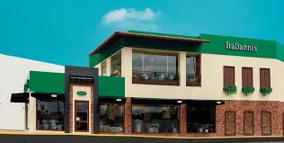

Un poco de nosotros
Italianni's es una cadena de restaurantes de comida italiana que nació en Texas, Estados Unidos, en 1996. En 1998, Italianni's abrió su primer restaurante en México, en la colonia San Ángel.
Italianni's es un restaurante familiar que ofrece cocina italiana de calidad en un ambiente casual y contemporáneo. La cadena busca y reúne las mejores recetas familiares de Italia, ofreciendo también su historia.
talianni's es un restaurante familiar que ofrece cocina italiana de calidad en un ambiente casual y contemporáneo. La cadena busca y reúne las mejores recetas familiares de Italia, ofreciendo también su historia
El consorcio mexicano Alsea, catalogado como el operador de restaurantes más grande de Latinoamérica, firmó la compra de 52 restaurantes de la cadena Italianni's en México.
salía LaraItalianni’s siempre ha sido una firma multicultural: es una cadena de restaurantes de comida italiana que nació en Texas, Estados Unidos, pero que hoy está encabezada por un grupo de empresarios mexicanos liderados por Juan Carlos Cachoua, su director general. Pese a ello, ha tenido problemas para ‘exportar’ el éxito logrado en México, por lo que ahora inicia una nueva estrategia
El concepto de esta empresa –creada en 1991 por Carlson Companies,
Desde entonces buscó expandirla a través del modelo de franquicias, y en 2005 Alsea –el mayor franquiciatario de restaurantes de América Latina, con marcas como Domino’s Pizza, Starbucks y Vips–tocó la puerta. Tras años de complejas negociaciones, en 2011 adquirió la franquicia maestra de Italianni’s en México. Hoy, la cadena cuenta con 94 sucursales en este país. Con una participación de mercado de 4%, es la cuarta más importante del sector de casual dining, según Euromonitor.
Italiannis es un restaurante de prestigio, comida italiana,bebidas, cocteles, etc.
Italianni´s es la cadena de comida italiana líder en México, con 52 unidades en más de 20 estados. La marca se caracteriza por ofrecer un alto estándar de calidad en los productos y servicio para el consumidor, gracias a un equipo de operación experimentado y una filosofía con altos valores de servicio.